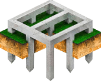

Хотите надежный фундамент с гарантией по договору и неограниченным сроком службы?
Забивные сваи за 2 дня
Узнайте, подойдет ли вам свайный фундамент
Что такое забивные сваи?

Для частного дома или бани из любых материалов

Для хозяйственных построек, гаражей и ангаров
Для крыльца, веранды, террасы или беседки
Для производственных зданий и складов
Почему железобетонные сваи такие прочные и долговечные?


Преимущества фундамента на забивных железобетонных сваях

Выгоно
Конструкция 10х10 обойдется около 100 тыс. Дешевле ленточного фундамента в 2-3 раза.

Надежно
Прослужит 200 лет. Не сгниет и не заржавеет. Одна свая выдерживает нагрузку до 40 тонн
Быстро
Конструкция 10х10 монтируется за 1 рабочую смену. 1 день на доставку техники
Чисто
Земельные работы не проводятся - ландшафт остается без изменений. Никаких куч земли
Всесезонно
Конструкции можно возводить зимой, при осадках. Не важен даже рельеф местности
Устойчиво
Не боится пучения грунта, так как устонавливается ниже глубины промерзания грунта
Для Вас сравнили характеристики различных фундаментов
|  |  |
 |
|
|
Характеристики |
Железобетонные сваи |
Буронабивные опоры |
Ленточный фундамент |
|---|---|---|---|
| Срок установки | 1-3 дня | 7 дней | 10-14 дней |
| Когда устанавливать | Любое время года | Сухая и теплая погода | Сухая и теплая погода |
| Когда можно строить дом | На следующий день | Через 21 день | Через 21 день |
| Какую нагрузку выдержит | До 40 т. на одну опору | До 20 т. на одну опору | Около 5-15 т. на м2 |
| Срок службы фундамента | 200 лет | 100 лет | 100 лет |
| Стоимость для здания 10х10 | 100 тыс. руб. | 125 тыс руб. | от 360 тыс. руб. |
Примеры работ и цены
Чубовка июнь, 2021 г.
- Получено задание на монтаж фундамента под одноэтажный деревянный дом
- Привезено и разгружено 30 свай размером 3 000 х 150 х 150 мм
- Сделана разметка в четком соответствии с проектом
- Сваи забиты на проектную высоту
- Объект успешно сдан заказчику
Отзыв о выполненной работе
Выражаю благодарность компании "Фундамент-Волга". Очень помогли с выбором фундамента и его установкой. Я думал, что надежный только ленточный фундамент. Но специалисты рассказали мне про свайно-забивной фундамент. Я посмотрел расчеты и понял, что этот тип фундамента не менее прочный и стоит в разы дешевле ленточного. Стройка - очень затратное дело и я рад, что удалось сэкономить без потери в качестве и надежности.
Сорокины Хутора, май 2021 г.
- Получено задание на монтаж фундамента под двухэтажный дом из керамзитоблоков
- Привезено и разгружено 54 сваи размером 3 000 х 150 х 150 мм.
- Сделана разметка в четком соответствии с проектом
- Из-за особенности грунтов сделано лидерное бурение, сваи погружены на проектную отметку
- Объект успешно сдан заказчику
Отзыв о выполненной работе
Спасибо за профессионализм! Я очень рада, что фундамент был установлен без грязных работ. Я очень боялась, что из-за выкопанной земли по всему участку будет грязь. Но этого не произошло. Работу сделали быстро - понадобилось всего 3 дня.

Мясокомбинат, май 2021
- Получено задание на монтаж фундамента под двухэтажный дом из газобетона
- Привезено и разгружено 34 свай размером 4 000 х 200 х 200 мм.
- Сделана разметка в четком соответствии с проектом
- Сваи забиты на проектную высоту
- Объект успешно сдан заказчику
Отзыв о выполненной работе
Нам необходимо было быстро начать строительство. Поэтому я хотел сразу, как только будет возможно, поставить фундамент. Я был удивлен, когда узнал о том, что можно делать фундамент даже зимой! К тому же, этот фундамент на забивных сваях оказался таким таким же прочным, как другие типы фундамента и вышел мне дешевле!
Дубовый Умет, март 2021
- Получено задание на монтаж фундамента под одноэтажный дом из газобетона
- Площадка расчищена от снега
- Привезено и разгружено 40 свай размером 3 000 х 150 х 150 мм.
- Сделана разметка в четком соответствии с проектом
- Сваи забиты на проектную высоту
- Объект успешно сдан заказчику
Отзыв о выполненной работе
Обратился за выполнением работы по закупке и забивке свай в «Фундамент-Волга». Заключили договор, оформили свайное поле, изготовили и доставили сваи своевременно.
Ребята выполнили свою работу по забивке свай (34 штуки) быстро и качественно за 3 дня (в сроки даже меньше оговоренных в договоре – 5 дней). В ходе работы возникали конечно наводящие вопросы. Большую благодарность хочется выразить руководителю Краснову Игорю Владимировичу, т.к. все возникающие вопросы решал на месте или по телефону или при личном его выезде на участок и давал консультации по дальнейшему строительству и материалам. Фундамент уже залит. Буду рекомендовать Вашу компанию знакомым и друзьям! Спасибо!
Выполняем фундамент под ключ и даем гарантию 5 лет
Гарантия прописана в договоре в соответствии с законодательством РФ
- 1 этап
- 2 этап
- 3 этап
- 4 этап
- 5 этап
- 6 этап
Узнаем несущую способность грунтов
Исследование грунта поможет сэкономить на строительстве дома и защитит от переплаты за перестраховку проектировщика и прораба.
Далеко не все типы грунтов могут быть пригодны для капитального строительства, даже если речь
идет об одноэтажном частном доме. Чрезмерно пучинистые, обводненные, склонные к промерзанию
грунты требуют использования специальных типов фундамента. Если исследование не было проведено,
то при выборе неправильного типа фундамента здание может начать проседать, в фундаменте и стенах
появятся трещины, что приведет к перекосу и выходу из строя оконных и дверных систем, проводки,
трубопроводов. Самое, мягко говоря, неприятное последствие –
частичное или полное обрушение конструкций.
Создаем проект фундамента
После того, как мы узнали несущую способность грунтов, мы готовим проект фундамента, который необходим для Вашего дома.
Доставка оборудования и техники
Также доставляем технику для забивки свай. Техника находится в собственности компании, мы не арендуем технику у третьих компаний. Это позволяет нам снизить цены на услуги и сделать их доступнее.
Готовим участок к работе
Делаем разбивку в соответствии с планом фундамента. Следим за качеством разметки мест под сваи. Это важно для того, чтобы фундамент прослужил долгий срок. В зимнее время расчищаем участок от снега.
Забиваем сваи
Свая забивается в землю ударной машиной. Опускаясь вниз, свая вытесняет грунт и уплотняет его. В результате вокруг ствола сваи образуется плотная прослойка, гарантирующая свае устойчивость к вертикальным и горизонтальным нагрузкам.
Используем дизель-молот, который отличается от других низким уровнем шума и вибрации при монтаже ж/б свай
Выполняем надземную часть фундамента
Удаляем почву и растительность, делаем подготовку под любой вид надземной части фундамента.
Выполняем надземную часть фундамента в соответствии с планом фундамента и пр. параметрами.
-
1 этап
Узнаем несущую способность грунтов
Исследование грунта поможет сэкономить на строительстве дома и защитит от переплаты за перестраховку проектировщика и прораба.
Далеко не все типы грунтов могут быть пригодны для капитального строительства, даже если речь идет об одноэтажном частном доме. Чрезмерно пучинистые, обводненные, склонные к промерзанию грунты требуют использования специальных типов фундамента. Если исследование не было проведено, то при выборе неправильного типа фундамента здание может начать проседать, в фундаменте и стенах появятся трещины, что приведет к перекосу и выходу из строя оконных и дверных систем, проводки, трубопроводов. Самое, мягко говоря, неприятное последствие – частичное или полное обрушение конструкций.
-
2 этап
Узнаем несущую способность грунтов
Исследование грунта поможет сэкономить на строительстве дома и защитит от переплаты за перестраховку проектировщика и прораба.
Далеко не все типы грунтов могут быть пригодны для капитального строительства, даже если речь идет об одноэтажном частном доме. Чрезмерно пучинистые, обводненные, склонные к промерзанию грунты требуют использования специальных типов фундамента. Если исследование не было проведено, то при выборе неправильного типа фундамента здание может начать проседать, в фундаменте и стенах появятся трещины, что приведет к перекосу и выходу из строя оконных и дверных систем, проводки, трубопроводов. Самое, мягко говоря, неприятное последствие – частичное или полное обрушение конструкций.
-
3 этап
Узнаем несущую способность грунтов
Исследование грунта поможет сэкономить на строительстве дома и защитит от переплаты за перестраховку проектировщика и прораба.
Далеко не все типы грунтов могут быть пригодны для капитального строительства, даже если речь идет об одноэтажном частном доме. Чрезмерно пучинистые, обводненные, склонные к промерзанию грунты требуют использования специальных типов фундамента. Если исследование не было проведено, то при выборе неправильного типа фундамента здание может начать проседать, в фундаменте и стенах появятся трещины, что приведет к перекосу и выходу из строя оконных и дверных систем, проводки, трубопроводов. Самое, мягко говоря, неприятное последствие – частичное или полное обрушение конструкций.
-
4 этап
Узнаем несущую способность грунтов
Исследование грунта поможет сэкономить на строительстве дома и защитит от переплаты за перестраховку проектировщика и прораба.
Далеко не все типы грунтов могут быть пригодны для капитального строительства, даже если речь идет об одноэтажном частном доме. Чрезмерно пучинистые, обводненные, склонные к промерзанию грунты требуют использования специальных типов фундамента. Если исследование не было проведено, то при выборе неправильного типа фундамента здание может начать проседать, в фундаменте и стенах появятся трещины, что приведет к перекосу и выходу из строя оконных и дверных систем, проводки, трубопроводов. Самое, мягко говоря, неприятное последствие – частичное или полное обрушение конструкций.
-
5 этап
Узнаем несущую способность грунтов
Исследование грунта поможет сэкономить на строительстве дома и защитит от переплаты за перестраховку проектировщика и прораба.
Далеко не все типы грунтов могут быть пригодны для капитального строительства, даже если речь идет об одноэтажном частном доме. Чрезмерно пучинистые, обводненные, склонные к промерзанию грунты требуют использования специальных типов фундамента. Если исследование не было проведено, то при выборе неправильного типа фундамента здание может начать проседать, в фундаменте и стенах появятся трещины, что приведет к перекосу и выходу из строя оконных и дверных систем, проводки, трубопроводов. Самое, мягко говоря, неприятное последствие – частичное или полное обрушение конструкций.
-
6 этап
Узнаем несущую способность грунтов
Исследование грунта поможет сэкономить на строительстве дома и защитит от переплаты за перестраховку проектировщика и прораба.
Далеко не все типы грунтов могут быть пригодны для капитального строительства, даже если речь идет об одноэтажном частном доме. Чрезмерно пучинистые, обводненные, склонные к промерзанию грунты требуют использования специальных типов фундамента. Если исследование не было проведено, то при выборе неправильного типа фундамента здание может начать проседать, в фундаменте и стенах появятся трещины, что приведет к перекосу и выходу из строя оконных и дверных систем, проводки, трубопроводов. Самое, мягко говоря, неприятное последствие – частичное или полное обрушение конструкций.
-
7 этап
Узнаем несущую способность грунтов
Исследование грунта поможет сэкономить на строительстве дома и защитит от переплаты за перестраховку проектировщика и прораба.
Далеко не все типы грунтов могут быть пригодны для капитального строительства, даже если речь идет об одноэтажном частном доме. Чрезмерно пучинистые, обводненные, склонные к промерзанию грунты требуют использования специальных типов фундамента. Если исследование не было проведено, то при выборе неправильного типа фундамента здание может начать проседать, в фундаменте и стенах появятся трещины, что приведет к перекосу и выходу из строя оконных и дверных систем, проводки, трубопроводов. Самое, мягко говоря, неприятное последствие – частичное или полное обрушение конструкций.
-
8 этап
Узнаем несущую способность грунтов
Исследование грунта поможет сэкономить на строительстве дома и защитит от переплаты за перестраховку проектировщика и прораба.
Далеко не все типы грунтов могут быть пригодны для капитального строительства, даже если речь идет об одноэтажном частном доме. Чрезмерно пучинистые, обводненные, склонные к промерзанию грунты требуют использования специальных типов фундамента. Если исследование не было проведено, то при выборе неправильного типа фундамента здание может начать проседать, в фундаменте и стенах появятся трещины, что приведет к перекосу и выходу из строя оконных и дверных систем, проводки, трубопроводов. Самое, мягко говоря, неприятное последствие – частичное или полное обрушение конструкций.
О компании
Вас приветствует строительная компания Фундаменты-Волга. Наша специализация – фундаменты любой сложности для малоэтажного строительства по ГОСТам и СНИПам. Многолетний опыт работы с типовыми и индивидуальными фундаментами, позволяет нам браться за проекты, от которых другие отказываются.
За время работы нами выполнено более 130 проектов в Самарской области. Это значит, что более 130 семей реализовали мечту о загородном доме с нашей помощью. Работаем для Вас на собственной качественной технике. Это две сваебойки, которые обеспечивают качественную установку свай с минимально возможными вибрациями. Управляют техникой бригады с опытом работы более 3-х лет и опытный проектировщик с узкой специализацией - работа с фундаментом.
ФУНДАМЕНТЫ
Фундамент под дом – несущая часть конструкции, служащая для опоры стен. Это один из важнейших компонентов, от которого зависит длительность службы всего здания в целом.